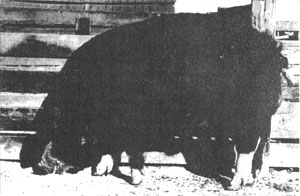
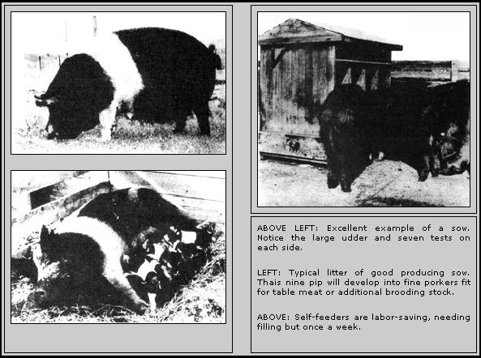
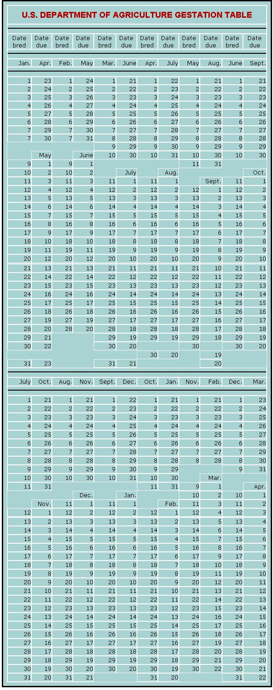

Excerpts from PRACTICAL ANIMAL HUSBANDRY by Jack Widmer are reprinted by permission of Charles Scribner's Sons.
Copyright 1949 by Charles Scribner's Sons.
Back in 1949-before factory farming and the "pump 'em full of chemicals" school of agriculture blitzed the country-a fellow named Jack Widmer wrote a little book called PRACTICAL ANIMAL HUSBANDRY. Now that manual wasn't what you'd call completely exhaustive, the writing style wasn't the best and a few of the ideas it advanced-such as confining laying hens in cages-were later refined into the kind of automated farming that so many of us are fighting against these days.
Still, PRACTICAL ANIMAL HUSBANDRY contained a good deal of basic information that today's "homesteaders" all too often need and don't know where to find. I'm pleased, then, that the publisher of the book, Charles Scribner's Sons, has granted me permission to reprint excerpts from this out-of-print manual. I think that many of my readers will find the following information both interesting and informative.-MOTHER.
As meat animals, hogs make more rapid gains, for the feed consumed, than any other members of the home barnyard. Seven-month-old hogs weighing 220 pounds (an ideal butchering weight) are not at all unusual, and contrary to general belief, one need not live in a corn-producing area to be successful with porkers, either on a commercial scale, or for the production of excellent meat for the table. Then, too, the feeding of one or two pigs for home consumption eliminates the necessity of edible garbage removal, furnishes profitable animals for the consumption of skim milk, whey or buttermilk, and produces the fine hams, bacons and fresh cuts that have made pork the favorite meat of rural America.
As to feeds necessary for the finishing of hogs, all manner of grains, sorghums, peanuts, acorns, hay and permanent pastures are ideal and there are few farms, be they large or small, that do not waste enough garbage, milk products and roughage that would make the feeding of a limited number of pigs a profitable enterprise.
Despite many people's objections to the odors produced by the hog lot, there is no necessity for this obnoxious aroma, for hogs if given half a chance are fundamentally clean animals with most objectionable odors being the fault of man rather than that of the porkers themselves. Then too, expensive feeding arrangements are not at all necessary and if feeding utensils are kept clean, and if hogs are supplied with a reasonable amount of fresh bedding, they will be found no more objectionable than other members of the home barnyard.
From a dollar and cent angle, the hog is by far the most valuable of farm animals, will reproduce and fatten rapidly ... surplus animals always find a ready market and have done much to eliminate farm mortgages as well as helping to pay taxes on non-commercial establishments.
For the country liver who is not interested in producing more pork than he and his family can readily consume it might not prove profitable for him to maintain a sow and to produce his own pigs. Instead he may find it more advantageous to purchase one or two 40- to 60-pound pigs (sometimes referred to as shoats), to fatten them, have them butchered and then to start afresh with another pair of young animals.
Yet, if one should have considerable feed on hand, and one agrees with us here on Toowoomba that little pigs are a joy and delight, then perhaps one should maintain a sow and dispose of surplus pigs either at weaning time (about eight weeks of age) or, if grains are readily available, to fatten a dozen, as readily as one or two, and to sell off the surplus as butcher hogs weighing in the neighborhood of 200 pounds.
The decisions as to whether one should feed just enough for home consumption or to maintain a sow or two will be an individual problem and will be contingent on amount of feed available, price of such feed, price of finished porkers, availability of alfalfa or clover pasture, time that one wishes to devote to hog production, etc. Yet if the agriculturist (either amateur or professional) should decide to go into hog production from the womb to the deepfreeze (as it were) then a short study of breeding stock will not be amiss.
We have stated under Sheep Production (The chapter on raising sheep from Mr. Widmer's book will be printed in a forthcoming issue-MOTHER.) that it is not always necessary, nor even advisable to purchase purebred foundation stock. However, in the case of hogs, it is recommended that the producer always invest his capital in registered stock. Costs are not excessively high and the advantages of starting with firstclass breeding stock are tremendous over that of starting with inferior sows and attempting to "breed up" over a period of several generations.
As to breed purchased, this choice will be influenced by two major factors: [1] the breed most readily available in any given community and [2] the type of hogs that are to be produced and the purpose for which they are to be used.
Swine breeds are divided into two major categories: [1] lard hogs and [2] bacon hogs. Poland China, Chester White and Duroc-Jersey are the leading lard hog breeds, while bacon hogs are represented by the Hampshire, Tamworth and Yorkshire. Here on Toowoomba, where we are interested primarily in bacon and ham production for our own table rather than in excessive lard that most "lard" varieties produce, we favor the long-bodied Hampshire with its tremendous length of bacon and its ability to carry more lean meat than fat and we are most happy with the "Canadian Bacon" that we fashion from the pork loins of these handsome animals. Yet again this will be a personal choice and the amateur who is interested mainly in home production for home consumption will do well to consider both types before purchasing his sow or sows. But regardless of type or breed, one should select the finest individuals available even though the original cost may be a few dollars higher. It is always to be remembered that even though but one sow is purchased the speculative chances are excellent that she will produce some gilts (young females) that will be maintained on the farm and she will therefore influence the type of hogs produced for years to come.
The beginner may find it simpler and safer to purchase either bred sows or gilts. In this way he will avoid the necessity of either maintaining or borrowing the services of a boar, and by careful selection he may purchase a good young female who is already carrying a litter.
She should be of good quality, showing considerable femininity. She should be judged much in the manner as the horse as to leg development, for she will be asked to carry considerable weight and her legs must be strong, straight and long enough so that her udder will not drag on the ground when she is producing milk. Attention should also be given her disposition for it is sometimes necessary for an attendant to be present and helpful during farrowing time and a sow of poor disposition will fight a man and will sometimes devour her litter. She should be of arched back and she should be of smooth flesh evenly layered over her entire body. The seller should also be asked to produce proof that she has been vaccinated for hog cholera and to guarantee that she be fertile and free from worms.
In order to assure large litters the sow should have at least six teats on each side, and if possible the prospective purchaser should examine her dam and sire to see that quality carries throughout the family. She should not have been bred previous to her eighth month and many hog fanciers prefer to wait until a young gilt has reached a year of age before taking her to the boar.
In the event that unbred females are purchased and it becomes necessary either to purchase a boar or to select a male for boar service from a neighbor, it might not be amiss to mention that the average sow will settle more readily if the boar is brought to the sow rather than transporting the sow to the boar.
In the event that the country dweller is interested in the hog business to the extent of maintaining four or more sows it would pay him to maintain his own boar. On the other hand if he maintains but one or two females then it would not be economical to feed a male the year around. Instead, he will find it necessary to rely upon a neighbor, or as is often the case he may go into a small neighborhood cooperative, along with several of his neighbors, in the purchase of a male.
The boar should show marked masculinity. He should have a strong, wide head, a well-crested neck and stand squarely on good strong legs with predominant strength evidenced in the pasterns. He should be well developed in the sexual organs and inasmuch as he must be handled often, one should be most careful to select a boar that displays a docile disposition. He should not be selected until he is at least eight months of age and he should not be asked to breed until he is at least a year old.
Usually one breeding per sow is all that is required to get her with pig. As already stated she should not be bred until she is at least eight months of age and young boars (under two years old) should not be asked to breed more than one sow daily throughout the breeding season. In the case of older boars, and if many sows are to be bred, he may be used twice daily ... early morning and late evening.
Sows and boars should not be permitted to run together. On the contrary, they are kept apart until the sow comes in season. The boar is then brought to her and she is bred in a small pen. She should not he asked to produce more than one litter per year until she is at least two years old, by which time she may safely produce a litter in the spring, and a second in the fall. She should have a productive life of at least eight years and if given proper care will have produced in the neighborhood of a hundred pigs during this relatively short span of life. No wonder hogs are often called the "mortgage lifters".
A sow will ordinarily farrow in about 112 days after the day of her last breeding, and by keeping careful records of dates of breeding and by using the following gestation table, the day that the sow is due is easily computed.
During the gestation period the ration for the sow should be one rich in proteins, with not too much grain feed so as to eliminate danger of her becoming too fat. Sows should be allowed to run in large enough paddocks or pastures to ensure ample exercise, and in the case of sows who are raising but one fitter annually, little is needed in the ration except good alfalfa pasture or some other succulent. For sows who are producing two fitters each year, more grain must be fed but the beginner must be cautioned against overfeeding as heavy fat has a tendency to complicate parturition. They should never be fed more than 2-1/2 pounds of grain daily for each 100 pounds of live weight. An ideal mixture being as follows:
Corn or ground barley ............................... 6 parts
Oats .................................................4 parts
Tankage or meat meal .................................1 part
Tankage makes an excellent protein supplement for hogs. It is the resulting product when packing houses process meat scraps, fat trimmings and scrap bones. This mixture is cooked in large tanks, the fat is skimmed off and the result sold to hog producers as either tankage or meat meal.
This ration may be increased or decreased depending on pasture or hay available ... a good guide for the beginner be ing that sows should be kept in a thrifty condition but never permitted to become fat or sluggish. If skim milk is available, 10 pounds of skim milk replaces 1 pound of tankage or meat meal.
As the date of impending parturition approaches, each individual sow should be taken from the herd at least five days previous to her "time" and should be placed in a farrowing pen. This pen should be at least ten feet square and adequate shelter (at least seven feet square) should be provided. These shelters need not be expensively constructed. All that is required is a place out of drafts with solid flooring (either concrete, wood or packed earth) that can be easily sterilized after each farrowing. A "bumper board," usually a 2 X 12 placed edgeways around the shelter about six inches off the floor, will give the pigs a chance to avoid being crushed when the sow rolls over. This should be installed and the sow supplied with enough straw bedding so that she may make her own nest.
Usually, assistance from man is not necessary. However, a sow should be watched closely during parturition so that if a pig is presented backwards (hind feet foremost) or in the event that the sow is overly clumsy and is apt to squash her pigs, a helping hand may be offered by man in picking up the pigs and showing them the teat. Some breeders, living in very cold localities provide small electrically heated "brooders" for each litter, while others insist that the sow knows her business and should, in the main, be left to herself.
For the first two days after farrowing, sows will have little desire for feed and will usually be content with lukewarm water, or they may be interested in a warm bran mash during the morning of the second day. After that the sow will show a strong desire for food and she may be started off on about three pounds of grain daily which may gradually be increased until she is on full feed (all the grain she will clean up) by the time the pigs are two weeks old.
Weak or orphaned pigs may be raised successfully on cows' milk fed with a nursing bottle ... however, healthy sows that have healthy pigs will require nothing but feed and water and the best pasture available.
An excellent grain mixture for sows while suckling pigs is:
Corn or ground barley .............................. 6 parts
Oats ...................................................... 1 part
Shorts ....................................................2 parts
Tankage or meat meal ......................................1 part
Sows should be watched for condition and fed enough to keep their milk at maximum production during this all-important phase.
During the suckling period a creep which bars the sow but allows the pigs to enter may be built. The little porkers should be fed a grain mixture of:
Corn or ground barley ............................... 10 parts
Shorts ................................................4 parts
Tankage or meat meal ..................................1 part
Oats (either rolled or ground) .........................2 parts
For those interested in fattening but one or two hogs per year, commercial feeds may be used to an advantage as it will not then be necessary to mix feeds for the hogs.
THE FINISHED PRODUCT
It is interesting to note that the hog is the rare exception in the animal kingdom ... he will not overeat. For this reason it is unnecessary to give rations in daily amounts, for hogs may be self-fed ... a method which reduces costs of labor and removes all possibilities of under or over feeding.
Inexpensive self-feeders may be made by anyone who is at all handy with tools, the principle being that the self-feeder is merely a grain container with outlets into a small trough at its base which refills itself as the grain level is lowered by the animals. In this manner, regardless of what grain mixture is fed, it is kept before sow and pigs at all times. All that is required of the husbandryman is to keep grain in the feeder and supply ample water and minerals.
All pigs should be vaccinated against hog cholera at 10 weeks of age and all male pigs should be castrated while still suckling their dams. At the babies' weaning time (about 12 weeks) when they weigh about 35 lbs., grains fed the sow should be cut down so that her milk supply will dry up, while the pigs themselves are continued on their self-fed grain until they have attained the weight of butcher hogs.
In the event that the sow's udder should become caked due to the unwillingness of her milk supply to stop at weaning time, she should be milked out once or twice by returning her litter to her for a few minutes. It is seldom necessary to repeat this operation more than twice.
For those who have purchased pigs rather than raising them, the same general practices may be followed in finishing the animals as with those home raised. Satisfactory gains can be made from feeding 350 to 400 pounds of grain plus 25 to 35 pounds of tankage per 100 pounds of live weight gain, and if hogs have this grain together with the tankage available in self-feeders (or in one main feeder with two compartments), they will balance their own diets by eating exactly the proper amounts of both grain and tankage to make up a proper ration.
The remainder of hog production is merely waiting until the hogs show the proper and desired degree of finish. Hogs that have been fed on peanuts or some other "soft" concentrate, instead of grain, should be fed corn or some other grain during the last three weeks of the fattening program so as to harden the flesh. In lard hogs many breeders permit their hogs to attain a weight of 250 pounds, while others, desiring more lean meat, prefer to butcher below that weight. For bacon type hogs, we prefer to butcher at no heavier than 220 pounds and have had ideal results with our hams and bacons at that weight.
In the event that the breeder wishes to save some of the gilts of the litter for replacements in the breeding herd, he should separate them from the fattening stock before they attain a weight of 150 pounds. They do not require as much feed as a fattening hog (for after all we are mainly interested in a growing ration), and a ration made up as follows, and fed at the rate of 2-1/2 pounds of grain for each 100 pounds of live weight, is ideal.
Corn or ground barley ...................................... 6 parts
Oats ............................................................ 4 parts
Tankage ....................................................... 1 part
This mixture is fed until the gilts attain eight months to one year of age and they are then bred and fed the same general rations as the sows.
It might be mentioned that com-on-the-cob makes excellent hog feed. When this is fed, weights of corn should be increased by one-fourth, allowing for the weight of the cob. Many hog fanciers feed corn in this manner and the hogs seem to enjoy eating the Corn from the cob, thus saving the expense of corn shelling.
MINERALS FOR HOGS
Minerals must be supplied to all hogs. Common salt is required in the ration (as it is with all animals) and other minerals should be supplied as needed. Excellent commercial hog mineral mixtures may be purchased in any good feed store, and this is by far the easiest method of obtaining the supplement. However, the mineral requirements of any given locality may differ from that of another and so it might be wise for the hog producer to check with his local county agent so as to determine what minerals are needed in his area.
|
 Excellent Poland China boar which has good-qulity pigs and is a fine representative of his breed. |
 |
 |
|
|
|
|